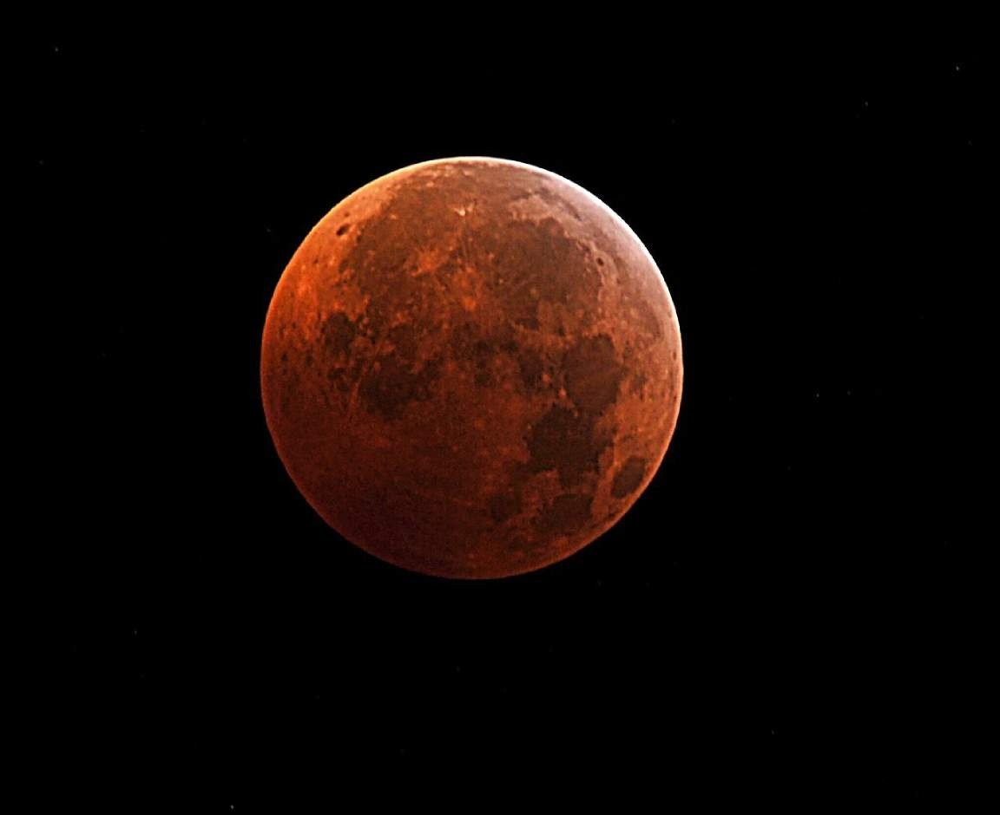
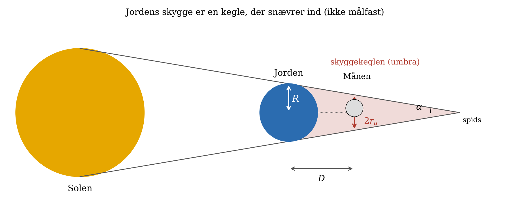
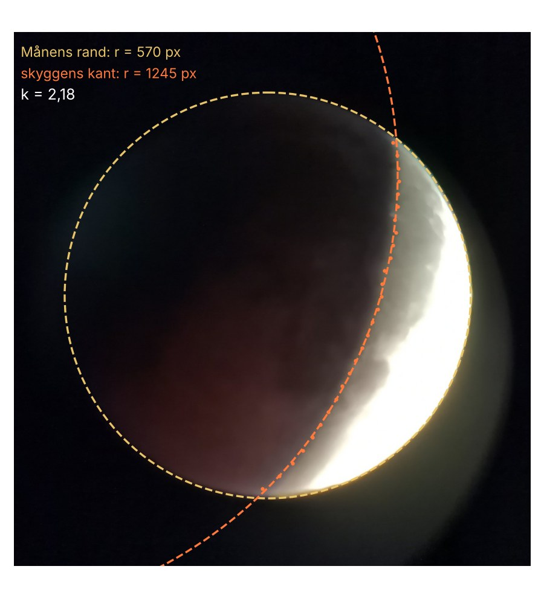

01Aristarchs idé
Omkring 270 f.Kr. iagttog Aristarch, at Jordens skygge under en måneformørkelse er ca. to Måne-diametre bred. Hipparch forfinede målingen et århundrede senere og fik afstanden til Månen til ca. 60 jordradier. Det er næsten præcis det rigtige tal.
Ræsonnementet bygger på tre iagttagelser, som elever kan gøre selv:
- Skyggens kant på Månen er en cirkelbue. Jorden er altså rund, og skyggen er en kegle.
- Solen og Månen ser lige store ud på himlen, ca. ½° i diameter. Det ses ved en total solformørkelse, hvor Månen netop dækker Solen.
- Forholdet mellem skyggens radius og Månens radius, \(k\), kan måles på et fotografi.

02Skyggekeglen

Keglens sider rører både Solen og Jorden. Set fra Jorden har Solen vinkelradius \(s\), og Jorden ses fra Solen under den lille vinkel \(\pi_\odot\) (Solens parallakse, ca. 0,0024°). Keglens halve åbningsvinkel er derfor \(\alpha = s - \pi_\odot\). På vejen ud til Månen snævrer keglen ind med \(D\cdot\alpha\):
\[ r_u = R - D\,\alpha . \]Divideres med \(D\), bliver alt til vinkler set fra Jorden. Skyggens vinkelradius er \(\theta_u = r_u/D\), og Jordens radius set fra Månen er Månens parallakse \(\pi_☾ = R/D\):
\[ \theta_u = \pi_☾ - s + \pi_\odot \qquad\Longleftrightarrow\qquad \pi_☾ = \theta_u + s - \pi_\odot . \]Skyggens vinkelradius får vi fra fotografiet: \(\theta_u = k\cdot m\), hvor \(m\) er Månens vinkelradius. Og når afstanden kendes i jordradier, er den kendt i kilometer:
\[ \frac{D}{R} = \frac{1}{\pi_☾}\quad(\pi_☾\ \text{i radianer}), \qquad D = \frac{R}{\pi_☾}. \]03Mål selv
Klik mindst tre punkter på Månens lyse rand og mindst tre punkter på skyggens kant. Værktøjet lægger den bedste cirkel gennem hver gruppe og regner forholdet \(k\) ud. Spred punkterne så meget som muligt langs buerne. Værktøjet starter med mit eget foto fra måneformørkelsen 7. september 2025. Knappen »Simuleret« giver et ideelt billede med den rigtige geometri fra samme aften. Du kan også hente dit eget billede ind; det bliver på din egen computer.
Klik på Månens lyse rand — mindst tre punkter.
04Arbejdsgang for elever
- Find et billede fra den delvise fase. Under totaliteten ses skyggens kant ikke; der skal være både lys og skygge på Månen. Notér tidspunktet.
- Mål to cirkler. Sæt punkter på Månens lyse rand og på skyggens kant. Kanten er udflydende, fordi halvskyggen glider over i kerneskyggen; klik der, hvor lyset tydeligt skifter.
- Find \(k\). Typisk 2,6–2,8.
- Find \(s\). Brug en almanak, eller mål Solens diameter med et hulkamera: billedet af Solen er 1/108 af afstanden fra hullet til skærmen.
- Regn \(\pi_☾\) og \(D\) ud, først med Aristarchs genvej, så med rettelserne. Sammenlign med den sande afstand for dagen.
05Hvor præcist bliver det?
For simuleringen 7. september 2025 kl. 19:20 UT er det sande forhold \(k = 2{,}748\), og den sande afstand er 369 500 km, 57,9 jordradier. Månen var tæt på perigæum, så den var lidt større end Solen.
| Beregning | \(\pi_☾\) | \(D/R\) | Afvigelse |
|---|---|---|---|
| Genvej: m = s, ingen rettelser | 0,9917° | 57,8 | −0,3 % |
| m = s, med atmosfære og \(\pi_\odot\) | 0,9751° | 58,8 | +1,4 % |
| Sand m = 0,2698°, med rettelser | 0,9891° | 57,9 | 0,0 % |
At den simpleste beregning rammer bedst, er et held: to fejl ophæver næsten hinanden, nemlig at Månen den dag var 2 % større end Solen, og at atmosfæren gør skyggen 2 % større. Den største usikkerhed i praksis er selve skyggekanten. En fejl på 3 % i \(k\) giver ca. 2 % fejl i afstanden, fordi \(s\) indgår uden fejl.
07Et rigtigt foto: 7. september 2025
Billedet er taget fra Sostrup med en Celestron AstroFi 6 og en mobiltelefon holdt til okularet, kort efter totaliteten. Den lyse sigd til højre er Månen, der er på vej ud af skyggen.

Målingen giver \(r_M = 570\) px og \(r_S \approx 1245\) px, altså \(k \approx 2{,}2\). Afhængigt af præcis hvor på den bløde overgang kanten lægges, ligger \(k\) mellem 2,0 og 2,2.
| \(k\) | Genvej \(D/R\) | Med rettelser \(D/R\) | Afvigelse |
|---|---|---|---|
| 2,22 | 67,2 | 68,4 | +16 til +18 % |
| 2,18 | 68,1 | 69,2 | +18 til +19 % |
| 2,04 | 71,2 | 72,4 | +23 til +25 % |
| 2,748 (sand) | 57,8 | 58,8 | 0 til +1 % |
Fotoet giver altså 67–72 jordradier mod de sande 58 — ca. 20 % for meget. Det er stadig et resultat, Hipparch ville have været tilfreds med. Men hvorfor er det så meget dårligere end simuleringen, når cirklerne følger billedet så pænt?
Kantens placering er god — dens krumning er ikke
Skyggens kant er kun en bue på ca. 50° af en stor cirkel. Over den bue er forskellen på en cirkel med radius 1245 px og en med den sande radius 1566 px kun ca. 25 px i buens midte — midterpunktets afstand fra korden, krumningspilen. Den skal måles på en overgang, der er 100–200 px bred, fordi halvskyggen glider jævnt over i kerneskyggen, og hvor mørke have og lyse højland flytter kanten et par pixel frem og tilbage.
Fittet bytter derfor om på to ting, det ikke kan skelne: en mindre skygge, hvis centrum ligger tættere på Månen, eller en større skygge længere væk. Begge går gennem de samme punkter på kanten. Det er nøjagtig samme problem, som rammer banebestemmelse af kometer over korte buer.
06En anden vej: pendul, måned og Newton
Afstanden kan også findes helt uden formørkelse. Eleven har brug for tre ting, der alle kan måles eller er kendt fra undervisningen: tyngdeaccelerationen \(g\), Jordens radius \(R\) og længden af en måned.
Trin 1 · Mål g med et pendul
Et matematisk pendul med længden \(L\) har svingningstiden \(T_p = 2\pi\sqrt{L/g}\), så
\[ g = \frac{4\pi^2 L}{T_p^{\,2}} . \]Tag tiden for 20 svingninger, og del med 20. Hold udsvinget lille, under ca. 10°, og mål \(L\) til loddets tyngdepunkt.
Trin 2 · Fra g til Jordens masse
Ved Jordens overflade er tyngdekraften Newtons tyngdelov: \(mg = GMm/R^2\). Eleven behøver hverken \(G\) eller \(M\) hver for sig — kun produktet:
\[ GM = g\,R^2 . \]\(R = 6371\) km kendes, eller måles som Eratosthenes gjorde (se Flokkens visdom).
Trin 3 · Månen falder om Jorden
Månen holdes i sin bane af den samme tyngdekraft. For en cirkelbane med radius \(D\) og omløbstid \(T\) er tyngdekraften netop den centripetalkraft, der skal til:
\[ \frac{GM}{D^2} = \frac{4\pi^2 D}{T^2} \qquad\Longrightarrow\qquad D = \left(\frac{g\,R^2\,T^2}{4\pi^2}\right)^{1/3} . \]Her skal \(T\) være den sideriske måned, 27,32 døgn — den tid, Månen er om at komme rundt i forhold til stjernerne. Fra fuldmåne til fuldmåne går der 29,53 døgn, fordi Jorden imens er flyttet et stykke rundt om Solen.
Med eksemplets tal (\(L = 1{,}000\) m, 20 svingninger på 40,12 s) bliver \(g = 9{,}81\ \mathrm{m/s^2}\) og \(D \approx 383\,000\) km, kun 0,4 % fra Månens middelafstand på 384 400 km. Prøv at skrive 29,53 døgn i stedet: så bliver afstanden 5 % for stor.
To uafhængige veje — Jordens skygge og Newtons tyngdelov — giver altså samme svar. Det er et stærkt argument for, at både geometrien og fysikken holder.